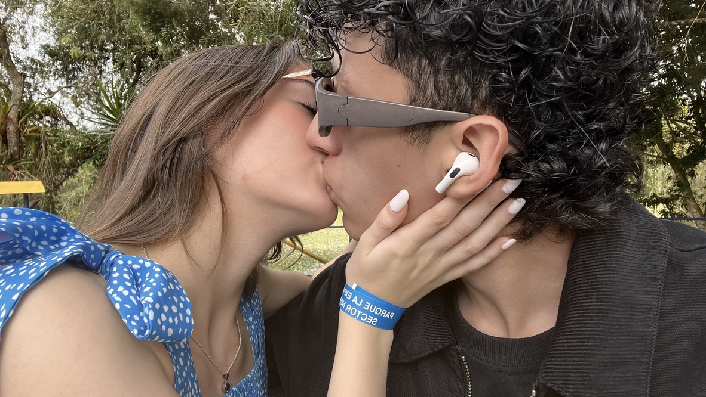

04 de Septiembre

Hoy vayamos más adelante, cuando volvimos y tuvimos nuestro primer paseo.
Ese día se sintió magico, sentía el hermoso olor de tu perfume gracias a la refrescante brisa.
Un día simplemente tranquilo, solo tu y yo, como solía ser en nuestros tiempos de colegio.
Aparte de eso, me gusta mucho pasear contigo, me gusta disfrutar un bello atardecer, el unico "problema" es que los tengo que ver atraves de tus ojos, porque no hay nada mejor que ver a quien considero MI mundo, con ojos más bellos que un atardecer.
Te amo mucho mi conejita.
Volver al pastel